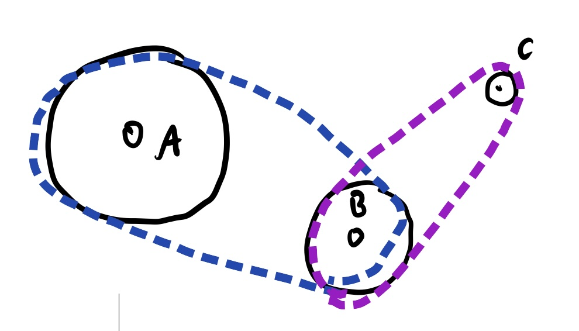

x = np.linspace(0, 10, 100)
y = (x - 2.5) ** 2
fig, ax = plt.subplots(figsize=(3, 3))
ax.plot(x, y);
Adapted from:
The better calculus pedagogy is the calculus of infintesimals, that is: assume \(f'(x) = \frac{f(x + \Delta x)-f(x)}{\Delta x}\) like normal and ignore second order infinitesimals (i.e., infinitesimals of infinitesimals). By doing so, the main rules of arithmetic suddenly also apply to calculus. For example:
\[ \begin{align*} \frac{\Delta}{\Delta x} x^2 & = \frac{(x + \Delta x)^2 - x^2}{\Delta x} \\ & = \frac{x^2 + 2 x \Delta x + \Delta x^2 - x^2}{\Delta x} \\ & = \frac{2 x \Delta x + \Delta x^2}{\Delta x} \\ & = \frac{2 x \Delta x}{\Delta x} \\ & = 2x \end{align*} \]
(Fundamental theorem, commutativity, cancelling terms in numerator, second rule, cancelling shared term in numerator and denominator.)
\[ \begin{align*} \frac{\Delta y}{\Delta x} = \frac{\Delta y}{\Delta u} \left( \frac{\Delta u}{\Delta x} \right) \end{align*} \]
(Shared term in numerator and denominator.)
This is simple arithmetic! For a geometric interpretation, imagine a conveyer belt system, where a motor is connected to A, pulling B and C. Suppose A has a circumference twice of B, and B twice of C. The rate of rotation of C is \(2 \times 2=4\)X that of A.

This corresponds to the system of equations:
\[ \begin{align} \frac{\Delta C}{\Delta B} &= 2\\ \frac{\Delta B}{\Delta A} &= 2\\ \therefore \frac{\Delta C}{\Delta A} &= \frac{\Delta C}{\Delta B} \left( \frac{\Delta B}{\Delta A} \right) = 2 \times 2 =4 \\ \end{align} \]
If these functions were non-linear, imagine the circumferences of these “functions” changing.
https://webspace.ship.edu/msrenault/geogebracalculus/derivative_intuitive_chain_rule.html
Suppose we wanted to model this function with a neural network.
x = np.linspace(0, 10, 100)
y = (x - 2.5) ** 2
fig, ax = plt.subplots(figsize=(3, 3))
ax.plot(x, y);
A single line wouldn’t be especially adequate for this. (The sum of lines is just a line.) But what about the sum of rectified lines?
y1 = np.clip(-3 * (x - 2), a_min=0, a_max=None)
y2 = np.clip(3 * (x - 3), a_min=0, a_max=None)
y3 = np.clip(6 * (x - 5), a_min=0, a_max=None)
fig, (ax0, ax1) = plt.subplots(1, 2, figsize=(6, 3))
ax0.plot(x, y)
ax0.plot(x, y1)
ax0.plot(x, y2)
ax0.plot(x, y3)
ax1.plot(x, y)
ax1.plot(x, y1 + y2 + y3);
This is the idea of neural networks (except, instead of lines, we’re dealing with hyperplanes).
Let’s consider a specific problem. Suppose we wanted to classify digits with a simple neural network.
MNISTDataModule (bs=128)
A DataModule standardizes the training, val, test splits, data preparation and transforms. The main advantage is consistent data splits, data preparation and transforms across models.
Example::
import lightning as L
import torch.utils.data as data
from lightning.pytorch.demos.boring_classes import RandomDataset
class MyDataModule(L.LightningDataModule):
def prepare_data(self):
# download, IO, etc. Useful with shared filesystems
# only called on 1 GPU/TPU in distributed
...
def setup(self, stage):
# make assignments here (val/train/test split)
# called on every process in DDP
dataset = RandomDataset(1, 100)
self.train, self.val, self.test = data.random_split(
dataset, [80, 10, 10], generator=torch.Generator().manual_seed(42)
)
def train_dataloader(self):
return data.DataLoader(self.train)
def val_dataloader(self):
return data.DataLoader(self.val)
def test_dataloader(self):
return data.DataLoader(self.test)
def teardown(self):
# clean up state after the trainer stops, delete files...
# called on every process in DDP
...dm = MNISTDataModule()
dm.setup()
X_trn, y_true = dm.as_matrix("trn", as_="numpy")
show_image(X_trn[0, ...].squeeze())
It’s a bit cleaner to deal with images as vectors for this exercise.
X_trn = rearrange(X_trn, "b h w -> b (h w)")Say we wanted to classify a digit as a “seven” (or not) based on a single pixel. A trained linear model would find some coefficient and you would draw some line dividing sevens from non-sevens.
Of course, this is pretty limiting. What if this surface had a lot of curvature?
x = np.linspace(0, 1, 100)
y_t = 1 - x**2
y_pred = -0.95 * x + 1.1
fig, ax = plt.subplots(figsize=(3, 3))
ax.plot(x, y_t, label="True")
ax.plot(x, y_pred, label="Pred")
ax.set(xlabel="Pixel Intensity", ylabel="P(Seven)")
fig.legend();
How do fit the sum of rectified lines like before?
To make this more interesting, let’s consider using all pixels, for all images.
Let’s define some parameters and helpers.
def relu(x):
return np.clip(x, a_min=0, a_max=None)
n, m = X_trn.shape
nh = 50 # num. hidden dimensions
n, m(60000, 784)Our results are going to be non-sense here, but this gives us the right dimensions for everything.
W0 = np.random.randn(m, nh)
b0 = np.zeros(nh)
W1 = np.random.randn(nh, 1)
b1 = np.zeros(1)
l0 = X_trn @ W0 + b0
l1 = relu(l0)
y_pred = l1 @ W1 + b1
y_pred[:5]array([[ 20.64558787],
[-17.49943048],
[-40.15099661],
[-20.96064613],
[-28.6419001 ]])Let’s compute an regression loss to get the model to predict the label. (This isn’t formally apropriate but it gives us the intuition.)
y_pred.shape, y_true.shape((60000, 1), (60000,))diff = y_pred.T - y_true
mse = (diff**2).mean()
mse1349.5939954853677Eventually, at the end of the forward pass, we end up with a single number. We compute the loss for each example in the batch and take the batchwise mean or sum of the loss. Then, we use this along with the gradients with respect to each parameter to update the weights,
Let‚Äôs calculate these derivates, one by one ü§©
First, we need to determine the gradient of the loss with respect to it’s input.
\[MSE = \frac{ \sum_{i=1}^{N} ( y^i-a^i )^2 }{N}\]
This function composes an inner difference function and an outer square function. By the chain rule:
\[ \frac{d}{dx} f(g(x,y)) = f'(g(x,y)) g'(x,y) \]
Let \(g(x,y) = x-y\) and \(f(x) = \frac{x^2}{n}\)
Thus, \(\frac{d}{dx} g(x,y)=\frac{dx}{dx} - \frac{dy}{dx}=1\) and \[ \begin{align*} f'(g(x, y)) & = f'((x-y)^2 / n) \\ & = f'((x^2 - 2xy + y^2)/n) \\ & = (2x - 2y) / n \end{align*} \]
Let’s verify:
assert n == 60000
x, y = sympy.symbols("x y")
sympy.diff(((x - y) ** 2) / n, x)\(\displaystyle \frac{x}{30000} - \frac{y}{30000}\)
Great. Now, in code:
@dataclass
class T:
"""Wrapper for numpy arrays to help store a gradient"""
value: Any
g: Any = None
def __getattr__(self, t):
return getattr(self.value, t)
def __getitem__(self, i):
return self.value[i]
@property
def v(self):
return self.value
def mse_grad(y_pred: T, y_true: np.array):
diff = y_pred.squeeze() - y_true
y_pred_g = 2 * diff / n
y_pred.g = y_pred_g[:, None]For a linear layer, the gradient is derived like so:
Let \(L = l(N)\) and \(N_{W,b}(X)\) is a neural network with parameters \(W, b\) and an input \(X\). We want to compute the partial derivates of \(L\) with respect to \(W\), \(B\) and \(X\) to pass upstream and manipulate the parameters. Therefore, we want to compute the chain rule:
By the chain rule:
\[\frac{\partial L}{\partial X} = \frac{\partial L}{\partial N} \cdot \frac{\partial N}{\partial X}\]
out.g.x was manipulatedThis is slightly more complicated. The weight gradient combines the mapping of the specific weights that influence each output dimension (inp.T) with the contribution of each output dimension to the loss (out.g).
By the chain rule, for the \(j\)th parameter of \(W\), \[ \begin{align*} \frac{\partial L}{\partial W_j} = \frac{\partial L}{\partial N} \cdot \frac{\partial N}{\partial W_j} = \sum_{k=1}^{||N||} \frac{\partial L}{\partial n_k} \cdot \frac{\partial n_k}{\partial W_j} \end{align*} \]
By the same logic where we determined that \(\frac{\partial N}{\partial X}\) is \(W\), we can say that \(\frac{\partial n_k}{\partial W_j}\) is \(x_j^i\). You can also think about this mathematically: what is the derivative of \(WX+b\) with respect to \(W_j\)? This is the \(j\)th element of the \(i\)th example.\[ \sum_{k=1}^{||N||} \frac{\partial L}{\partial n_k} \cdot \frac{\partial n_i}{\partial W_j} = \sum_{k=1}^{||N||} \frac{\partial L}{\partial n_k} x_j^i \]
Because \(W\) is a multivariate function, it’s loss Jacobian is defined like so \[ \frac{\partial L}{\partial W} = \begin{bmatrix} \frac{\partial L}{\partial W_{1}} \\ \frac{\partial L}{\partial W_{2}} \\ \vdots \\ \frac{\partial L}{\partial W_{d}} \end{bmatrix} = \begin{bmatrix} \frac{\partial L}{\partial n_1} x_1^1 &+ \dots &+ \frac{\partial L}{\partial n_{||N||}} x^{||N||}_1 \\ \vdots & \ddots & \vdots \\ \frac{\partial L}{\partial n_1} x_d^1 &+ \dots &+ \frac{\partial L}{\partial n_{||N||}} x^{||N||}_d \end{bmatrix} \]
Factoring out all the \(x\)’s from the partial derivates gives us the final expression: \[ \frac{\partial L}{\partial W} = \begin{bmatrix} x_1^1 & \dots & x^{||N||}_1 \\ \vdots & \ddots & \vdots \\ x_d^1 & \dots & x^{||N||}_d \end{bmatrix} \begin{bmatrix} \frac{\partial L}{\partial n_{1}} \\ \vdots \\ \frac{\partial L}{\partial n_{||N||}} \\ \end{bmatrix} = X^T \frac{\partial L}{\partial N} \]
More info: https://nasheqlbrm.github.io/blog/posts/2021-11-13-backward-pass.html
The gradient of the bias simply consolidates the gradients from from all the output dimensions
def lin_grad(inp, out, w, b):
inp.g = out.g @ w.T
w.g = inp.v.T @ out.g
b.g = out.g.sum(axis=0)For ReLU, we pass the upstream gradient downstream for any dimensions that contributed to the upstream signal. Note that this is an element-wise operation because the layer operates only on specific elements and has no global behavior.
def relu_grad(inp, out):
inp.g = (inp.value > 0).astype(float) * out.gPutting it all together:
# "Tensorize" the weights, biases and outputs
tensors = (y_pred, W1, b1, l1, W0, b0, l0, X_trn)
ty_pred, tW1, tb1, tl1, tW0, tb0, tl0, tX_trn = map(T, tensors)
mse_grad(ty_pred, y_true)
ty_pred.g[:5]array([[ 0.00052152],
[-0.00058331],
[-0.0014717 ],
[-0.00073202],
[-0.00125473]])mse_grad(ty_pred, y_true)
lin_grad(tl1, ty_pred, tW1, tb1)
relu_grad(tl0, tl1)
lin_grad(tX_trn, tl0, tW0, tb0)Verify with PyTorch
# Port layers
pt_lin0 = nn.Linear(m, nh)
dtype = pt_lin0.weight.data.dtype
pt_lin0.weight.data = torch.from_numpy(tW0.v.T).to(dtype)
pt_lin0.bias.data = torch.from_numpy(tb0.v).to(dtype)
pt_lin1 = nn.Linear(nh, 1)
pt_lin1.weight.data = torch.from_numpy(tW1.T).to(dtype)
pt_lin1.bias.data = torch.from_numpy(tb1.v).to(dtype)
# Forward pass
logits = pt_lin0(torch.from_numpy(X_trn).to(dtype))
logits = F.relu(logits)
logits = pt_lin1(logits)
loss = F.mse_loss(
logits.squeeze(),
torch.from_numpy(y_true).float(),
)
# Backward pass
loss.backward()
for w, b, layer in [
(tW0, tb0, pt_lin0),
(tW1, tb1, pt_lin1),
]:
assert torch.isclose(
torch.from_numpy(w.g.T).float(),
layer.weight.grad,
atol=1e-4,
).all()
assert torch.isclose(
torch.from_numpy(b.g.T).float(),
layer.bias.grad,
atol=1e-4,
).all()Let’s refactor these as classes.
class Module:
def __call__(self, *x):
self.inp = x
self.out = self.forward(*x)
if isinstance(self.out, (np.ndarray,)):
self.out = T(self.out)
return self.out
class ReLu(Module):
def forward(self, x: T):
return relu(x)
def backward(self):
(x,) = self.inp
relu_grad(x, self.out)
class Linear(Module):
def __init__(self, h_in, h_out):
self.W = T(np.random.randn(h_in, h_out))
self.b = T(np.zeros(h_out))
def forward(self, x):
return T(x @ self.W.v + self.b.v)
def backward(self):
(x,) = self.inp
lin_grad(x, self.out, self.W, self.b)
class MSE(Module):
def forward(self, y_pred, y_true):
return ((y_pred.squeeze() - y_true) ** 2).mean()
def backward(self):
y_pred, y_true = self.inp
mse_grad(y_pred, y_true)
class MLP(Module):
def __init__(self, layers, criterion):
super().__init__()
self.layers = layers
self.criterion = criterion
def forward(self, x, y_pred):
for l in self.layers:
x = l(x)
self.criterion(x, y_pred)
def backward(self):
self.criterion.backward()
for l in reversed(self.layers):
l.backward()
model = MLP([Linear(m, nh), ReLu(), Linear(nh, 1)], criterion=MSE())model(tX_trn, y_true)
model.backward()This is quite a bit cleaner!
By the rules of FastAI, we can now use the torch.nn.Module classes which is the equivalent in PyTorch.